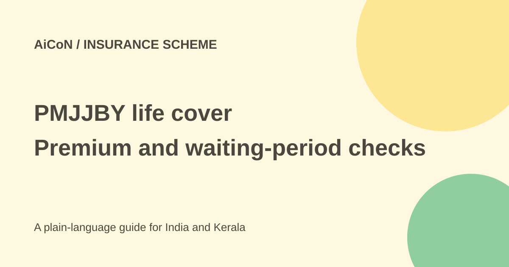

PMJJBY: life cover, annual premium and October enrolment limits
PMJJBY is bank-linked term life insurance. It offers ₹2 lakh death cover under the scheme rules, with a standard annual premium of ₹436. It is insurance, not a savings plan, and first-time enrolment has an important exclusion.

Who can join?
Pradhan Mantri Jeevan Jyoti Bima Yojana is available to eligible individual account holders aged 18 to 50 through participating banks and post offices. You may enrol through only one account, even if you have several accounts.
The FAQ describes annual cover from June 1 to May 31. Continued cover can extend to age 55 under its renewal conditions. Joining at 50 and continuing under the rules is different from a new applicant joining after the entry-age limit.
How much does it cost?
The standard full-year and renewal premium is ₹436. For new enrolment during September, October or November, the official FAQ lists a part-year premium of ₹342. December-February is ₹228, and March-May is ₹114. June-August uses the full ₹436.
These are scheme premium rules, not an instruction to transfer money to an agent. Ask your participating bank or post office which premium applies to your enrolment or rejoining date. The next renewal requires the full annual premium under the current rules.
The 30-day rule is not an accident waiting period
For first-time enrolment and rejoining, the FAQ says cover is not available for death other than due to an accident during the first 30 days from enrolment. Accidental death is treated differently under that exclusion. The original short post's broad waiting-period wording needed this distinction.
Risk starts from the date of premium auto-debit, subject to the scheme conditions. Filling a form without a successful debit does not prove active cover. Keep the acknowledgement and ask the bank to confirm the start date.
How to enrol carefully
- Contact your own participating bank or post office through its official branch, app or website.
- Check the age and account rules, and whether you already have PMJJBY through another account.
- Read the current scheme form and premium for the enrolment month.
- Fill nominee details accurately. A nominee is the person named to receive the claim benefit under the process.
- Read the auto-debit consent and renewal terms before agreeing. Keep enough balance for the premium.
- Check the actual debit and cover acknowledgement, and keep copies with other insurance records.
- Tell the nominee where the records are and which bank handles a claim.
Cover, claims and safe use
The scheme is pure term insurance: it covers death and does not provide an investment component, maturity payment or surrender value. ₹2 lakh may be useful support, but it is not automatically enough cover for every family.
For a claim, contact the enrolling bank or post office and follow the insurer's current form and document requirements. Do not send death certificates or identity records to an unverified WhatsApp contact. Never share banking OTPs or PINs with an intermediary.
What changed since the original post?
This guide separates the ₹436 annual premium from the ₹342 part-year premium for new October enrolment, and narrows the first-30-days exclusion to non-accidental death. The official FAQ was rechecked; no policy was bought or personal eligibility assessed.
Frequently asked questions
Is ₹436 always charged when joining?
The current FAQ has part-year enrolment premiums. Full annual renewal is ₹436.
Can I join through two accounts for double cover?
No. The scheme permits one account per person.
Will I get my premiums back later?
It is term insurance, not a maturity-value savings product.
Sources: Official PMJJBY FAQ · Official Jan Suraksha portal. Checked 7 October 2026.